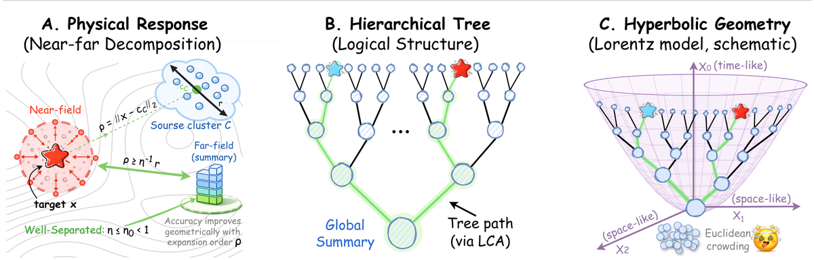
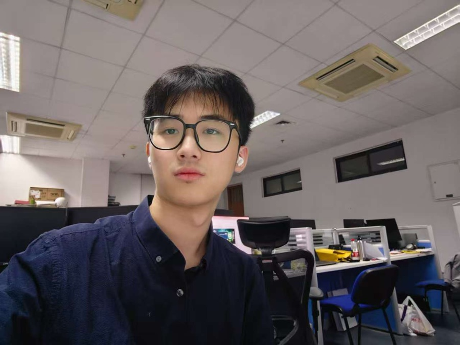
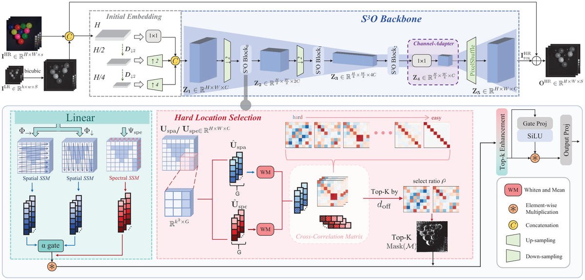
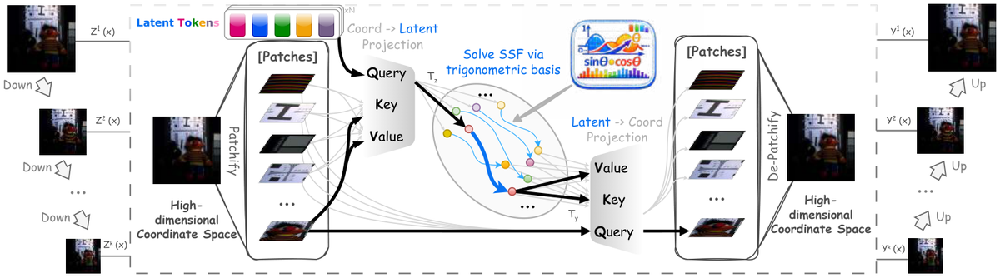
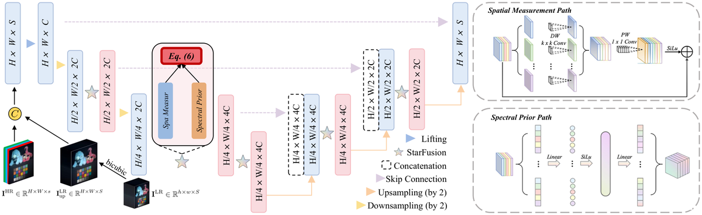
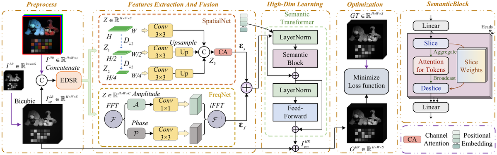
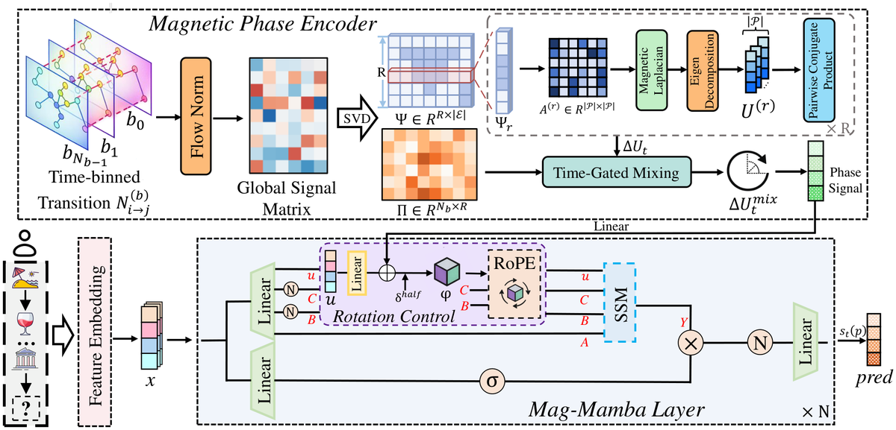
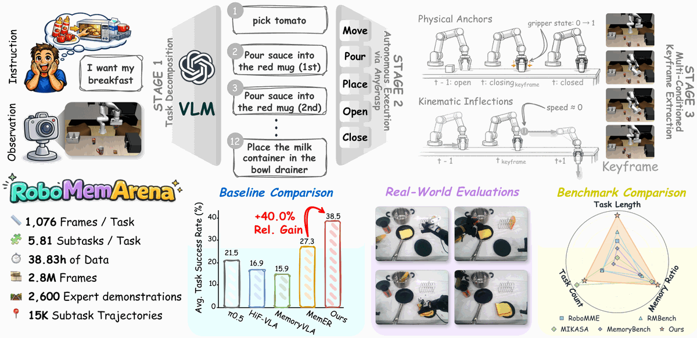
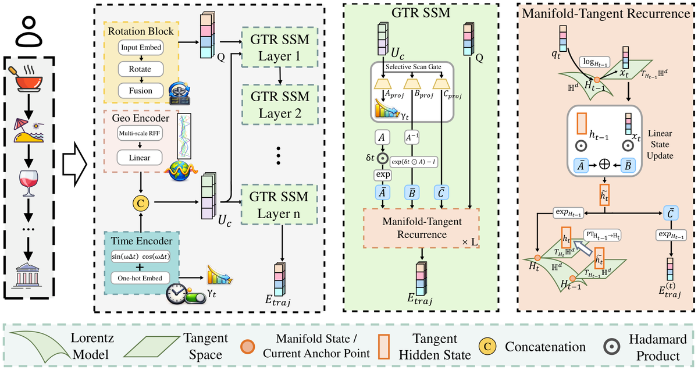
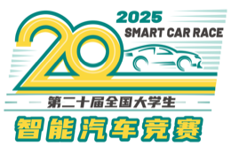

Jieyuan Pei, Zhuoxuan Li, Wei Li, Haobo Zhang, Jiawei Jiang, Jianwei Zheng
Up to ~40% lower relative ℓ2 error on PDEBench / CFD, with 2×+ less training time and memory.

B.Eng. Intelligent Science & Technology
Zhejiang University of Technology · expected June 2027
Research intern · AIR, Tsinghua University
Robot memory, long-horizon tasks, test-time training, world models, and decision generalization for vision–language–action policies.
Neural operators, PDE surrogates, engineering simulation, and scientific ML that transfers across geometries and resolutions.
Spatial–spectral fusion, cross-scale and degradation modelling, operator-based imaging under realistic transfer.

Jieyuan Pei, Zhuoxuan Li, Wei Li, Haobo Zhang, Jiawei Jiang, Jianwei Zheng
Up to ~40% lower relative ℓ2 error on PDEBench / CFD, with 2×+ less training time and memory.

S3O: Selective Spatial–Spectral Operator for Cross-Scale Fusion
Jieyuan Pei*, Wei Li*, Zhuoxuan Li, Junwei Zhu, Meiyi Lu, Jiawei Jiang, Chenyu Wang, Jianwei Zheng
0.3–1.4 dB gains on three datasets at up to 4× lower compute than heavy Transformer / Mamba baselines.

Solving Spatial–Spectral Fusion with Latent Spectral Operators
Wei Li, Jieyuan Pei, Junnan Xu, Xuanfeng Ding, Junwei Zhu, Wanjun Chen, Jianwei Zheng
+0.160 PSNR on CAVE ×4/×8 with 4.4% / 6.9% SAM reduction.

Asymmetric StarFus: Learning Incoherent Measurements for Semantics-Aware Spatial–Spectral Fusion
Jieyuan Pei, Wei Li, Zhuoxuan Li, Junwei Zhu, Chuangjie Fang, Jianwei Zheng

S2TA-Fuse: Semantic-Superpixel Tokenized Attention for Spatial–Spectral Fusion
Jiawei Jiang*, Wei Li*, Jieyuan Pei, Junwei Zhu, Honghui Xu, Yuchao Feng, Jianwei Zheng

Mag-Mamba: Modeling Coupled Spatiotemporal Asymmetry for POI Recommendation
Zhuoxuan Li*, Tangwei Ye*, Jieyuan Pei, Haina Liang, Zhongyuan Lai, Zihan Liu, Yiming Wu, Qi Zhang, Liang Hu

RoboMemArena: A Comprehensive and Challenging Robotic Memory Benchmark
Huashuo Lei*, Wenxuan Song*, Huarui Zhang, Jieyuan Pei, Jiayi Chen, Haodong Yan, Han Zhao, Pengxiang Ding, Zhipeng Zhang, Lida Huang, Donglin Wang, Yan Wang, Haoang Li
26 tasks, 2,600 demonstrations, 2.8M frames; mean trajectory 1,076 steps.

GTR-Mamba: Geometry-to-Tangent Routing Mamba for Hyperbolic POI Recommendation
Zhuoxuan Li*, Jieyuan Pei*, Tangwei Ye, Zhongyuan Lai, Zihan Liu, Fengyuan Xu, Qi Zhang, Liang Hu
World models for autonomous driving
AIR, Tsinghua University

National First Prize
National Undergraduate Intelligent Car Race
2025
National Second Prize
National Undergraduate Electronic Design Contest
2025
National First Prize
China Robot Competition & RoboCup China
2024
Python / PyTorch · C/C++ · ROS · embedded systems · PCB design · mechanical CAD